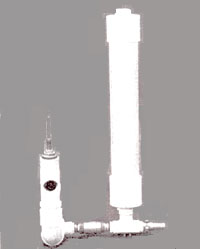
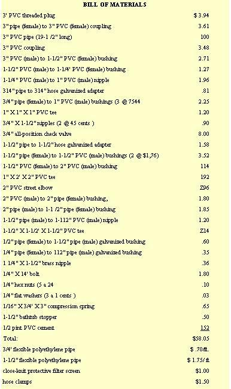
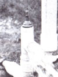
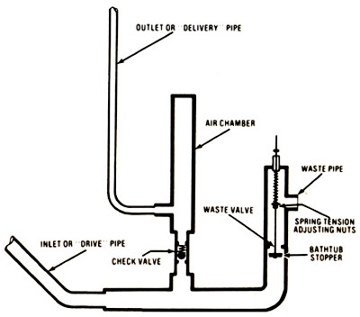

The search for a "perpetual motion" machine is just about as old as civilization itself. And-though we all know that such a gadget probably doesn't exist?there is a piece of equipment that comes pretty close: the hydraulic ram pump.
The water ram (also known as a trompe) has been around for quite a while and was a widely used means of pumping water before electricity became common in rural areas. Strictly speaking, the ram pump doesn't create its own power, but draws energy from the force of a moving column of water ... usually fed through a pipe from a point more than 18 inches above the trompe.
Although the hydro ram won't operate without a fluid power source, it will work indefinitely when water is present. And, except for an adjustment every few months, the device requires no maintenance whatsoever!
Quality hydraulic rams are available commercially for anywhere from $400 to $800, complete ... and these are excellent units, designed to last for many years. However, most folks simply don't have that kind of money to spend, so MOTHER's research team came up with a pump that delivers the same reliable performance as its store-bought cousins but only costs about $60! Better yet, MOTHER's version can be put together in less than an hour ... using off-the-shelf plumbing supplies.
Most of the components of our pump are fabricated from PVC pipe ... the same conduit that's used throughout the country in residential and industrial plumbing systems. Polyvinyl chloride is tough, easy to work with, and readily available. The moving parts of the trompe consist of a standard check valve, a steel rod, a spring, and a rubber bathtub stopper.
NOTE: If you wish, you may substitute Schedule 40 black pipe (of comparable dimensions) for the flexible polyethylene used at the drive and delivery ends of the system.
Begin assembly of your ram pump by either purchasing or scrounging all the plumbing components that are detailed in our materials list (don't forget to buy a can of PVC cement to permanently seal all the joints in the system). Then, find a bolt that measures 1/4" X 14", cut the head off, and thread the "new" upper shank to a depth of about three inches. Threaded rod won't do here, since the shaft must have a 4" (at least) smooth-surfaced midsection.
Next, run two hex nuts from the lower end of the rod to a point about 5" up the shaft, and fasten the bathtub plug to the tip of the stem with nuts and washers as illustrated, With this done, thread the "waste" portion of the pump together (the parts from the 1/4" X 1-1/2" brass nipple down to the 2" PVC to 21 pipe bushing). Then, install the washer and spring on the upper part of the 1/4" rod, and slip this entire waste-valve assembly up into its PVC housing and through the brass nipple at the top. Lock the completed valve in place with the remaining 1/4" nut.
With this section completed, merely assemble the rest of the plumbing ... using our illustration as a guide (remember that the PVC joints must be glued together if they're not already threaded). Then you can either let the ram stand by itself, or-for a more permanent fixture-mount it to a block of wood by using two lengths of hanger strap fastened with wood screws.
The hydro ram is as easy to set up as it is to build. Of course, you must first have a source of water (a stream, pool, or what have you) that's at least 18 inches above the pump and can provide a flow-of no less than three gallons per minute-into the trompe.
When you've determined the water supply to be adequate, install the ram at a point no less than a foot and a half below the source (several feet would, of course, be more desirable ... MOTHER's trompe operates with a "fall" of 11.5 feet). The length of 1-1/2" tubing from the supply to the pump (known as the "drive pipe") should be from 10 to 15 times greater than the distance of fall, and-to avoid drawing foreign matter into the machinery-a filter screen must be placed over the drive pipe's inlet opening.
Now, simply run the necessary length of 3/4" flexible polyethylene tubing (the durable, high-pressure type) to your storage tank or reservoir from the pump outlet (this is the "delivery pipe"). like care not to allow any kinks or sharp bends to form in the hose, since such "corners" will impede or stop the flow of water. You can also route a 1-1/2" line from the ram's "waste" pipe back into the feed stream ... or-if you wish-you can divert this water for some other purpose.
You'll be amazed at how well the simple pump performs. During testing, MOTHER's crew discovered that a steady supply of water was available at a point 65 feet above the hydraulic ram mechanism. And at a 40-foot height, a whopping 60 gallons per hour was delivered from the outlet conduit ... which is enough to supply a reservoir with a total of 1,440 gallons in one 24-hour-period!
Because of the friction factor, the total length of the delivery pipe has a bearing on the performance of the pump. As a rule, this tube should be less than 20 times the height that the fluid is to be lifted ... and, in most situations, this "formula" is easy to live with.
Naturally, since the conditions under which each pump operates will vary, the mechanism will have to be adjusted to suit individual needs. Do this by simply putting an end wrench through the ram's waste pipe opening and turning the inner hex nuts to either tighten or loosen the tension on the spring. More "Pressure" will increase the rate of waste-valve"action" (simultaneously decreasing the amount of water pumped) . . . while relieving the spring tension will force more fluid through the check valve-and out of the ram's delivery pipe-with each stroke.
When you stop to think about it, it's a wonder that the hydraulic ram isn't used nearly everywhere ... even where inexpensive electric power is available. After all, the design is virtually maintenance-free, creates no waste or pollution, and cobs next to nothing to build and install. Furthermore, by using larger or smaller plumbing components, a trompe can be scaled up or down to suit your individual needs.
So-whether you want to supply a farm pond with fresh water, fill a storage tank, deliver drinking water, or feed an irrigation system-the simple water ram can do the job ... and without the outside power requirements and maintenance headaches that are unavoidable when using conventional pumps.
EDITOR'S NOTE: For more information on the hydraulic ram principle (including a formula for determining how much water you can expect your pump to deliver and tips on setting it up), see " The Hydraulic Ram Pump: Perpetual Motion for the Homestead", MOTHER NO. 22, pages 40-43.
Water from the feed pool or reservoir rushes down the drive pipe-flowing past the waste valve and out the waste pipe-until enough pressure builds up to force the bathtub stopper against its seat. (Naturally, this pressure increases as the fall from the source becomes greater.)
When the waste valve shuts, it drives water through the check valve and into an air chamber ... where the fluid compresses the air and forces it to kick back, like a piston. This action, in turn, closes the check valve and pumps water out the delivery pipe and-eventually-into a pond, tank, or irrigation system.
As the check valve closes, the water in the drive pipe rebounds temporarily ... creating a partial vacuum that allows the waste valve to drop open again. The excess liquid (which was not driven into the delivery pipe) then flows out the waste opening and can be returned to the water source or used to fill another pond.
The entire cycle is repeated some 40 or more times per minute. (The rate can be increased by tightening the inner adjusting nuts, while a growler How of water will be achived by loosening the adjusters.) Of course, you'll have to "fine tune" your trompe to suit your particular needs.
|
 |
 |
 |
|
|
 |
|